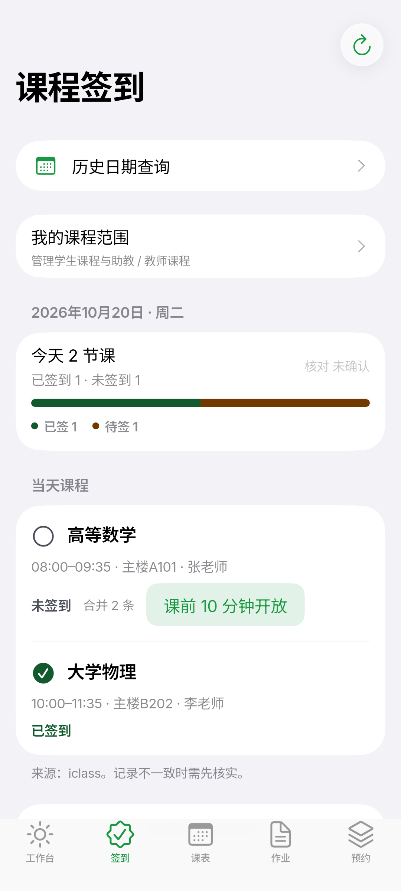
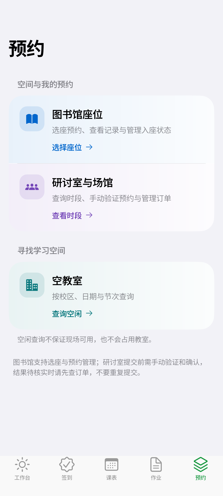
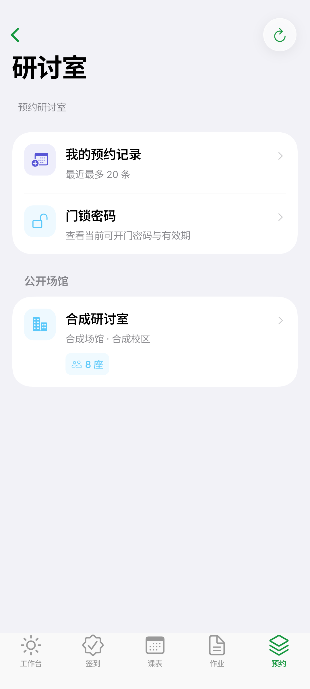
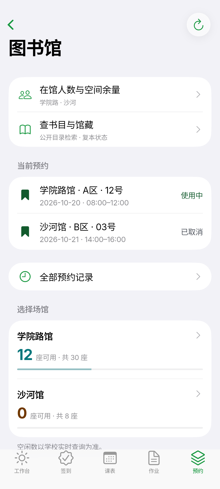

出门前，看看今天
当天课程、签到状态、作业摘要与个人待办集中在一屏。先安排今天，再进入需要的服务。
- 今日课程与上课地点
- 作业截止与提交状态
- 签到窗口与逐课确认
手机上的北航校园工作台：今天的课、待交的作业、
能签到的课、能坐的图书馆座位——
打开就知道接下来做什么。


围绕一天的节奏组织信息，
打开就知道接下来要关注什么。
以上展示产品整体能力。Android 是当前唯一主线开发平台，各功能的读写边界与验证范围请查看平台说明与 功能与接口协议总览 ↗。
下面是 Android 真机尺寸的离线演示截图，
内容全部为合成样例。
点击图片可放大。
两段录屏都来自真实 Android 构建：冷启动展示银杏叶的展开动画，离线演示依次切换工作台、课表、作业、签到与预约。内容全部为合成样例，不包含任何真实账号、学校数据或个人课程。




Android 使用 Flutter + Rust 同一套工程：手机为底部标签导航，平板与宽屏展开为侧栏，工作台、课表与设置的状态在两种布局间保持。
Windows 与 Android 共用这份 Flutter 工程，只保证可编译、不再排期；macOS 与 iOS 的原生应用已冻结，保留源码与归档文档，不再做功能开发。
查看平台与进展
Android 是当前主推平台，直接安装即可使用。
其它平台的当前状态，也在这里说明。
手机直接安装 APK。课表、作业、签到、图书馆、研讨室与空教室，收进熟悉的移动工作台；发现更新后可在应用内暂停、续传并校验安装包。
与 Android 共用同一 Flutter 工程，宽屏呈现分组侧栏、窄窗口切换到底部导航。只保证可编译。
独立 Swift/SwiftUI 原生应用，功能面最完整，但自 2026-10-24 起不再排期，仅保留源码与归档文档。
原生移动工作台，复用 macOS 的校园服务。目前需使用 Mac 与 Xcode 构建安装，不再排期。
查看构建说明这里列出已发布安装包与源码入口。Android 是唯一主线开发平台；Windows 只保证可编译；macOS 与 iOS 已冻结。学校写操作（签到、座位与研讨室预约、作业提交）都需要你逐次确认，结果不明时只会让你回查，不会自动重发；真实账号与物理设备验收仍在进行，请以学校官方渠道核对数据。Android 应用内更新支持断点续传、两个 GitHub 官方入口和安装包校验；未签名安装包首次运行可能提示未知来源，请先核对发布页的 SHA-256。
Android 安装与已知限制 ↗ 功能与读写边界 ↗Android 是当前唯一主线开发平台，使用 Flutter + Rust 开发，下载 APK 即可安装。Windows 与它共用同一份 Flutter 工程，只保证可编译；macOS 与 iOS 的原生应用已冻结，保留源码与归档文档，不再做功能开发。
Ginkgo 是非官方个人开源项目，与北京航空航天大学及其任何部门无隶属、合作或授权关系。校园信息请以学校官方渠道为准。
不需要 Ginkgo 账号。使用本人的北航统一身份认证账号登录；学校系统的网络策略、验证码或维护状态可能影响服务。Android 也可先进入离线演示了解界面。
下载 ARM64 的 APK，按系统提示允许安装未知来源应用即可；应用内也能检查更新、暂停续传并校验安装包。升级前请备份重要个人待办，不建议降级或卸载；曾安装调试版的设备可能需要先卸载旧版，卸载会清除本机数据。Windows 主下载是未签名的单文件安装器，SmartScreen 可能提示未知发布者，请先核对 SHA-256。
这些操作都会先请求你确认，并且只提交一次。提交结果不明时，应用不会自动重发，而是提示你回到列表核对。研讨室预约需要你手动完成拼图验证。部分真实写入尚未完成往返验收，请以学校记录为准。
Android 请确认设备为 arm64、系统为 Android 7.0 或更高；Windows 推荐下载 x64 安装包并按向导完成安装，若缺少 Visual C++ Redistributable，请先安装微软官方运行库；便携 ZIP 需完整解压，保留同目录 DLL 与 data 文件夹。反馈时不要附上密码、Cookie 或个人信息。
Ginkgo 仅供个人学习与自用，使用者应遵守学校相关服务条款与网络使用规定，不用于绕过风控或替代官方服务。软件依 MIT 许可按原样提供，作者不对数据准确性、服务可用性或由此产生的损失负责。请自行核对重要信息，并承担使用风险。